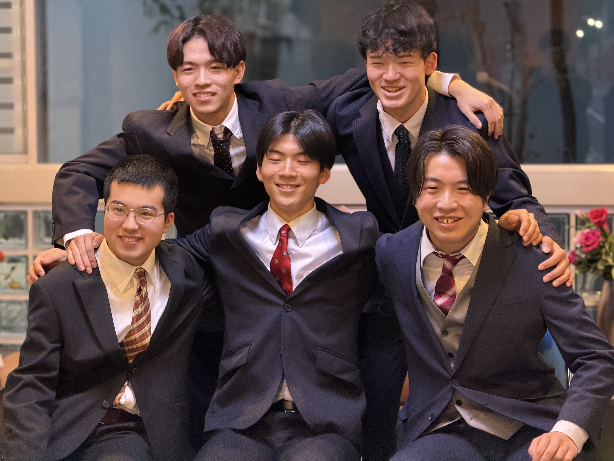
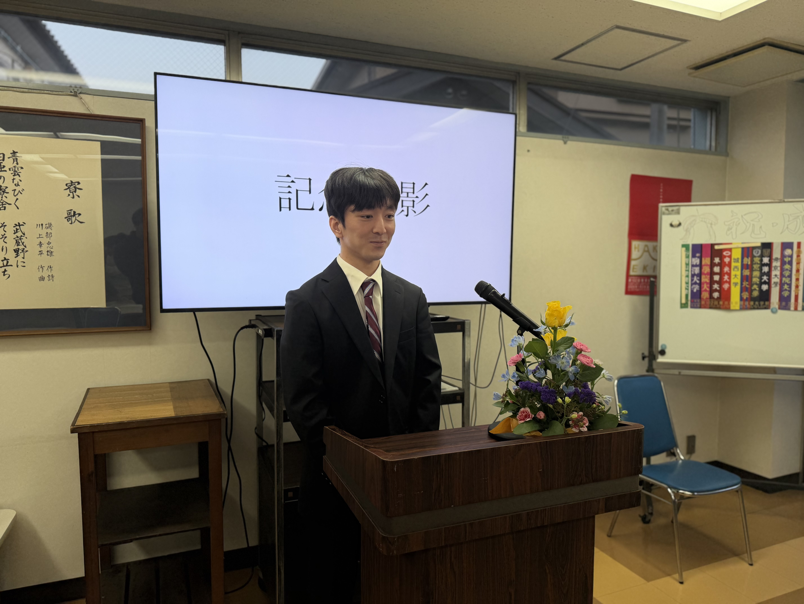
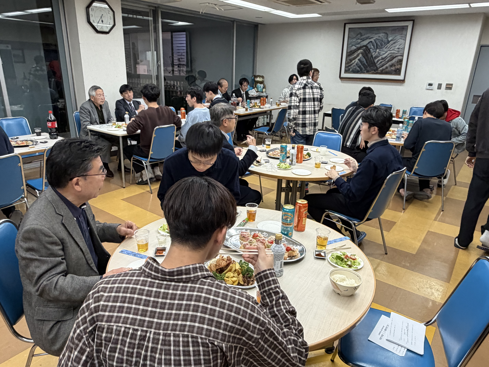
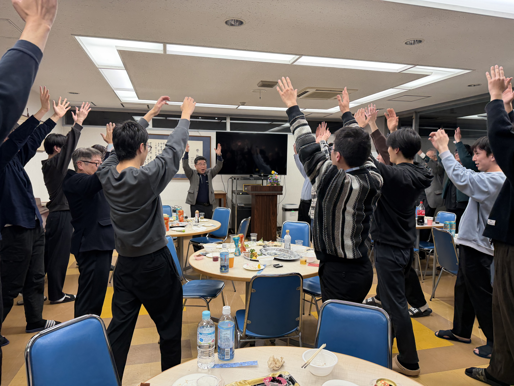

二十歳を祝う会

「二十歳を祝う会」が執り行われました。第一部では坂田信久氏をお招きし、箱根駅伝の舞台裏について語っていただきました。
第二部：式典
第二部の式典では、公益財団法人富山県学生寮理事長からの式辞が代読されました。式辞では、二十歳を迎えた寮生が生まれた20年前にYouTubeが設立されたことに触れ、動画サービスが生活に不可欠となった現代において、偽情報の拡散という負の側面にも目を向けるよう呼びかけられました。情報があふれる時代だからこそ、真相を見極める力を養い、大学進学時の志を思い返しながら、社会に貢献できる人物へと成長してほしいと激励の言葉が贈られました。
続いて、青雲会会長が祝辞を述べ、「夢と情熱を持ち続けてほしい」と呼びかけました。AI時代における偽情報を見抜く力の重要性を説き、寮という環境を活かして多くの人と議論を重ねてほしいと述べられました。
富山県教育委員会教育長からのメッセージも紹介され、予測困難な時代において柔軟な発想と挑戦する力が求められていること、大きな夢と志を持って世界へ羽ばたいてほしいとの期待が寄せられました。

寮生代表・二十歳代表の言葉
寮生委員会委員長は寮生代表として、20歳という節目は大人としての生き方を考える大切な年であり、寮生活で培った経験が今後の人生を支える力になると述べました。
二十歳代表の寮生は誓いの言葉を述べ、来年度にインドネシアへの交換留学を計画していることを明かし、「失敗を恐れず、高い志を持ち、より良い未来を自らの手で切り開いていく」と力強く宣言しました。
今年度は5名の寮生が二十歳を迎え、式典で紹介されました。

第三部：祝賀会
第三部では祝賀会が開かれ、OBの先輩方と共に食事を楽しみながら親睦を深めました。和やかな雰囲気の中で世代を超えた交流が行われ、最後は恒例の万歳三唱で締めくくられ、二十歳を迎えた寮生の門出を盛大に祝いました。
